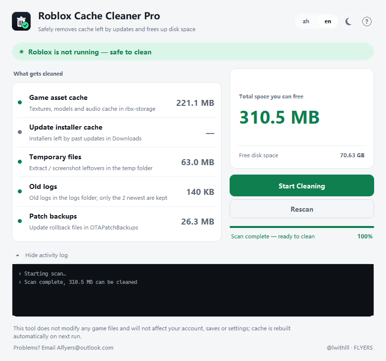

Windows 10 / 11 · 64-bit · no installer
Roblox neverRoblox Cache Cleaner Pro cleans up.
Downloaded installers and dead assets pile up in the cache. A few updates, or a few different games, easily adds several GB, and the client starts to hitch. This clears the leftovers.
游戏下载过的安装包，废弃资源全堆在缓存文件里，更新几次或多游玩了几款游戏就会轻松多出几个G，导致游戏内掉帧卡顿。本工具就是帮助你清这些残留的。

What it removes
它的清理目标
Five folders, all under %LOCALAPPDATA%\Roblox\. The folders stay,
only the files inside go. Any of them can be unticked.
共五个目录，全部位于 %LOCALAPPDATA%\Roblox\。目录保留，只清里面的废弃文件，支持自由勾选。
rbx-storage/textures, meshes, audio贴图、模型、音频logs/keeps the two newest日志仅保留最近两份Downloads/installed by past updates历次更新装的包OTAPatchBackups/rollback copies回滚备份tmp-capture-storage/extract leftovers解包残留What it can't do
安全性
The complete import list of the core module. No networking, no process spawning, no registry code — none of it was written.
这是核心模块的完整 import 清单。程序里没有联网、启动进程、更改注册表的代码。
# core.py — complete imports import ctypes, os, re, shutil from ctypes import wintypes # process check: read-only, same as Task Manager CreateToolhelp32Snapshot(TH32CS_SNAPPROCESS, 0) Process32FirstW(...) Process32NextW(...)
- —No network. No
socket,urlliborrequests.不联网。没有socket、urllib、requests。 - —No spawning. No
subprocess; it cannot launch anything.不启动进程。没有subprocess，无法调起任何程序。 - —No registry. No
winreg.不更改注册表。没有winreg。 - —No game access. The process is never opened, only its name read.不修改游戏本体。从不打开进程，只读进程名。
Antivirus
杀毒软件
The exe is unsigned, and it unpacks native modules at launch. Both trip heuristic scanners, so some antivirus software may flag it — though that is unlikely.
因程序未签名，且启动时会解出原生模块。这两点都会触发启发式引擎，部分杀毒软件可能报毒，但概率较低。
Would rather not trust it? Deleting the contents of
%LOCALAPPDATA%\Roblox\rbx-storage\ by hand does exactly the same thing.
不放心？手动删除 %LOCALAPPDATA%\Roblox\rbx-storage\ 里的内容效果完全一样。
Questions
QA
Does this affect my account?会影响账号或本体安全性吗？
No. Only local cache files are removed. Nothing is uploaded, and the game rebuilds the cache on its next launch.
不会，只删本地缓存文件，不上传任何数据，必要缓存游戏下次启动会自动重建。
Do I have to close Roblox first?需要先关掉 Roblox 吗？
Yes — the Clean button disables itself while the game is running, so the tool never competes with a live process for the same files.
需要，游戏运行时「开始清理」会自动禁用，避免出现问题。